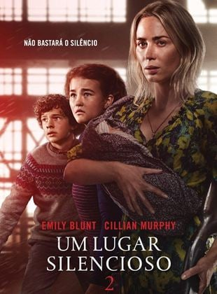
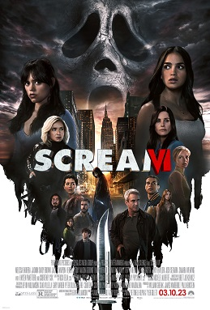

Não! Não Olhe!

SINOPSE: Novo filme de terror do diretor Jordan Peele (Corra e Nós). Em Não! Não Olhe! uma cidade do interior da Califórnia começa a ter eventos bizarros e extraterrestres. Uma dupla de irmãos interpretado por Keke Palmer (True Jackson e Alice) e Daniel Kaluuya (Corra e Judas e o Messias Negro), possuem um rancho de cavalos e são vizinhos de um parque de diversões de uma série de televisão do personagem interpretado por Steven Yeun, inspirada no velho oeste. Os dois então são testemunhas de eventos bizarros e discos voadores.
Um Lugar Silencioso - Parte II
SINOPSE: Um Lugar Silencioso - Parte 2, se passa logo após os acontecimentos mortais do primeiro filme e a morte de Lee Abbott (John Krasinski). O restante da família Abbott (Emily Blunt, Millicent Simmonds e Noah Jupe) precisa agora seguir em frente e sair de sua antiga casa, encarando o terror mundo afora, continuando a lutar para sobreviver em silêncio e ainda com um recém-nascido. Obrigados a se aventurar pelo desconhecido em busca de sobreviventes, eles percebem que, nem todos os monstros são aqueles que se atraem pelo som.
Pânico 6
SINOPSE: Sam (Melissa Barrera), Tara (Jenna Ortega), Mindy (Jasmin Savoy Brown) e Chad (Mason Gooding) estão fartos. Depois de sobreviver ao massacre final de Ghostface em Woodsboro, os quatro se mudam sem cerimônia para Nova York. Lá, os dois irmãos querem começar uma nova vida, por assim dizer, e deixar a pequena cidade e suas experiências traumáticas para trás. Mas o maldito assassino com uma máscara de fantasma e uma lâmina afiada não pode ser abalado tão facilmente, porque de repente ele também aparece na Big Apple. Na rua, no metrô, no supermercado – aparentemente em todos os lugares ele aproveita a agitação da cidade grande para desaparecer na multidão com a mesma rapidez com que apareceu antes. E embora Sam, Tara, Mindy e Chad já tenham conhecido o assassino, desta vez eles não podem confiar em sua experiência. Porque quem está por trás da máscara tem novos truques na manga.
Sobrenatural:A Porta Vermelha

SINOPSE: Sobrenatural: A Porta Vermelha, quinto filme da franquia, se passa 10 anos após os eventos de Sobrenatural: Capítulo 2. A trama de Sobrenatural: A Porta Vermelha volta a seguir a família Lambert, formada por Renai (Rose Byrne), Josh (Patrick Wilson, Foster (Andrew Astor), Dalton (Ty Simpkins) e Kali (Juliana Davies). Josh segue para o leste para deixar seu filho, Dalton, na faculdade. Dalton acabou de ingressar na faculdade, no entanto, o sonho do jovem logo se torna um pesadelo, e ele logo se dá conta de que ainda está muito longe de conseguir levar uma vida normal. Quando os demônios reprimidos de seu passado voltam repentinamente para assombrar os dois, ele e o pai são obrigados a retornar à macabra dimensão da Porta Vermelha, enfrentando uma série de novas e ainda mais terríveis ameaças e encarando seus medos mais profundos para, só assim, banirem seus demônios de uma vez por todas